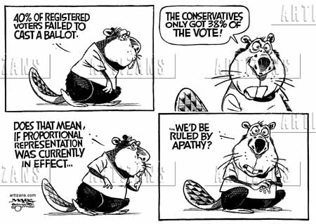

In earlier units, you learned about how nations such as Canada and the United States have interpreted liberal principles and integrated them into their governmental structures. It is through these democratic governments that the will of the majority is to be represented and followed.
In a perfect world, the task of following the general will of the people sounds simple enough, but the Earth does not always follow theory in perfect order. Sometimes democratic governments do not completely live up to the principles of liberalism.
In this lesson, you will examine how liberal democratic governments may adopt illiberal practices which undermine their citizens’ influence over their government.
From previous lessons, you have recognized that authoritarian governments may sometimes employ democratic mechanisms to solidify their power. You have also learned that true adherence to the principles of liberalism requires more than the implementation of basic democratic mechanisms. The fundamental notion of majority rule can often be inconsistent with liberalism’s promotion of minority and individual rights. Actions or policies that exist within the context of democracy but ignore the basic principles of liberalism are referred to as illiberal.
It is important to note and remember that if a country is not Liberal, then it cannot be or act illiberal. Authoritarian regimes reject liberalism and follow a different ideology instead. Their actions are not illiberal... they reject liberalism and its values.
Direct democracy operates on the belief that every citizen's voice is important and necessary for the orderly and efficient operation of society. Some economic and political philosophers have argued in favour of this system as an expression of liberal principles. Direct democracy seems practical only with small numbers of people, however, because it requires everyone to get together in one space to discuss issues, then make decisions based on the majority vote.
How do the concepts of democracy and liberalism differ?
One perspective is that the “will of the people” means simply what the majority wants. This can be most easily determined by employing direct democracy but, as you have learned, this can be difficult to implement in large nations. You can still see elements of direct democracy in action today through referendums and plebiscites.
It is also possible to ensure that the will of the people will be heard by utilizing electoral systems which guarantee this principle, such as proportional representation. Under proportional representation, the representation of political parties in a government is based on the percentage of the popular vote. This guarantees that every vote counts and majority rule will be followed. This system often fosters greater democratic participation and a more informed electorate. The graph on the right suggests the Conservative majority in 2011 would have been a minority government if we had Proportional Representation. How would today's distribution of seats in Parliament look if we had proportional representation at the last election? Why did Justin Trudeau drop this election platform promise? Why are traditional mainstream political parties reluctant to consider proportional representation? The USA has a similar issue. Would Donald Trump have been elected if the US election was decided by popular vote instead of the Electoral College?
Another perspective holds that it is the job of an elected representative government to determine the best course of action for its citizens. The citizens, through elections, give their representatives the power to decide what is in their nation’s best interest. By having an accountable government—one which allows for free and periodic elections as well as checks and balances—citizens can ensure that these representatives are working in their constituents’ best interests. If the citizens believe these representatives can no longer serve their interests, the electors can remove the representatives and elect new ones. Does this mean governments can ignore the will of the people between elections, assuming they have a clever way to regain support before the next election?
Finally, many people hold the opinion that the needs of society are better served by a well-informed elite group of citizens who are better qualified to undertake the task of governing than the majority. Though many agree that this type of system can lead to a more efficient democratic process, this type of elitism can lead to a tyranny of the minority where a small group of people suppresses the interests of the majority of citizens who live in that country. Is there an elite group now with a disproportionate share of influence today?
Responsible government is where the branches of government propose laws. The executive branch (prime minister and cabinet), is dependent on the direct or indirect support of elected members of the legislative branch (MPs in the House of Commons). If the legislature, which officially represents the will of the people, does not approve of important laws proposed by the executive branch, then the executive branch may be forced to resign or call an election.
Canada is divided into electoral districts, ideally of 100 000 people, which are called ridings or constituencies. Each constituency sends a single representative to the House of Commons in the federal Parliament in Ottawa.

Senators are not elected; as a seat becomes vacant in the Senate, the prime minister appoints a new senator - who may remain until age 75. Any legislation passed by the House of Commons must also be passed by the Senate before it can become law.
In Canada, free and democratic elections are held on a regular basis. All eligible Canadian citizens over the age of 18 have the right to vote at election time, and most people are free to run as candidates in the election. By law, the government in power must hold elections, at the most, every five years. Members of Parliament must follow the will of the people or they may not be re-elected at election time.
Even though Canadians have these democratic rights, a number of people do not take advantage of their right to vote. Consider the following information on the voter turnout results for the last six federal elections according to elections.ca.
| Year | Voter Turnout Rates in Canadian Elections |
|---|---|
| 2006 | 64.7% |
| 2008 | 58.8% |
| 2011 | 61.1% |
| 2015 | 68.3% |
| 2019 | 67% |
| 2021 | 62.6% |
It is not easy to determine why the voter turnout at federal elections fluctuates. If only a small percentage of people turn out to vote, is the country really representing the majority of people?
Are you curious about voter turnout in Alberta? Take a look at the next table.
| Year | Voter Turnout Rates in Alberta Elections |
|---|---|
| 2004 | 45.12% |
| 2008 | 40.59% |
| 2012 | 54.37% |
| 2015 | 56.74% |
| 2019 | 67.5% |
Canadians believe they live in a liberal society. This has not always been the case. Not all Canadians have always had the right to vote. Canadian women could not vote in federal elections until 1918. Aboriginal people living on reserves did not obtain the right to vote until 1960.
The Canada Elections Act establishes the rules that citizens and the country must follow when establishing who is eligible to vote. The following section was taken from the Canada Elections Act before it was changed to give Aboriginal people on reserves the right to vote.
14. (2) The following persons are disqualified from voting in an election and incapable of being registered as electors and shall not vote nor be so registered, that is to say,...
(e) every Indian, as defined in the Indian Act, ordinarily resident on a reserve, unless
(i) he was a member of His Majesty’s Forces during World War I or World War II, or was a member of the Canadian Forces who served on active service subsequent to the 9th day of September, 1950.
—Canada Elections Act
It was deemed that this part of the act was discriminatory, so the section was changed on March 31, 1960. From that time on, all Aboriginal people were granted the right to vote. Had the Canadian Charter of Rights and Freedoms been created earlier, there may never have been such a discriminatory law in place.
The presidency of the USA has its own "first past the post" system.
Watch "What is the U.S. Electoral College and How Does it Work?" below and discover for yourself the complicated world of American politics:
This system means a candidate can win the presidency through the electoral college vote, while at the same time losing the popular vote.
Five US Presidents won their presidency through the electoral college vote after their opponent won the popular vote:
Richard Nixon and Bill Clinton won the presidency in elections where neither themselves nor their opponents won a majority of the popular vote (but they did win more votes than any of their opponents).
Explore the pros and cons of the electoral college.
Does the electoral college represent the will of the people? Does it protect minorities from majority rule?
Examine the following quotation:
“People often say that, in a democracy, decisions are made by a majority of the people. Of course, that is not true. Decisions are made by a majority of those who make themselves heard and who vote—a very different thing.” - Walter H. Judd
Use this quotation as well as your previous knowledge of liberal democracies to answer the following questions in your notes:
How does the cartoon below reflect the differences between the first-past-the-post electoral system and proportional representation? Which side of the debate does the artist support?
How does this cartoon relate to the concept previously discussed: "will of the people"?

Direct democracy: a form of democracy in which the electorate decides on policy initiatives without elected representatives as proxies
Illiberal: about aspects of liberal democracy that suppress citizens’ civil liberties
Electoral college: a body of electors chosen by the voters in each state to elect the president and vice president of the U.S. (a plurality or first-past-the-post electoral system)
Plurality voting: or first-past-the-post, in which a candidate wins a seat based on the most votes when 3 or more candidates are running
Popular vote: the percentage of the total votes cast received by a candidate or a political party
Proportional representation: an electoral system in which candidates of a political party are elected based on the share of the popular vote each political party receives in an election
In this lesson, you have reviewed a variety of approaches used in liberal democracies to attempt to represent the will of the majority. You have examined the parliamentary system used in Canada and the republican style of government found in the United States.
You have also become aware of the strengths and weaknesses of each of these systems and how each system endeavours to address the representation of the majority. Lastly, using what you have learned, you developed and articulated your opinion regarding the extent to which the Canadian government represents the will of the majority.